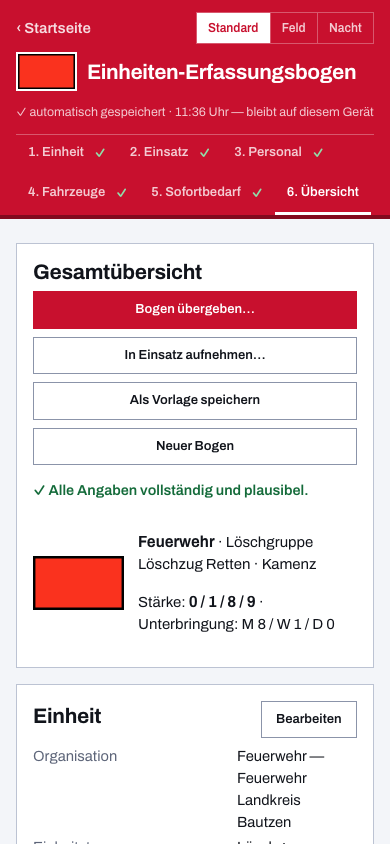

Stärkemeldung der Feuerwehr: Aufbau, Beispiel und digitale Erfassung
Die Stärkemeldung beantwortet die erste Frage jeder Einsatzleitung: Wer ist da, und mit wie vielen Kräften? Sie ist die knappste Form der Auskunft über eine Einheit — wenige Zahlen, aus denen sich ergibt, ob ein Auftrag vergeben werden kann, wie viele Trupps zur Verfügung stehen und wie viel Verpflegung und Unterkunft später gebraucht wird. Diese Seite erklärt, woraus eine Stärkemeldung besteht, zeigt ein Beispiel und beschreibt, wie du sie ohne Zettelwirtschaft erfasst und weitergibst.
Wozu die Stärkemeldung dient
Eine Einheit meldet ihre Stärke, wenn sie einem anderen Führungsbereich unterstellt wird oder dort eintrifft: beim Einrücken in den Bereitstellungsraum, bei der Anmeldung am Meldekopf, beim Übergang in die überörtliche Hilfe. Die Einsatzleitung führt aus diesen Meldungen ihre Übersicht über Kräfte und Mittel — ohne sie weiß sie zwar, dass Fahrzeuge stehen, aber nicht, wie viele Einsatzkräfte sie tatsächlich einteilen kann.
Deshalb gehört zur Meldung fast immer mehr als die reine Zahl: die Bezeichnung der Einheit, ihre Führungskraft samt Erreichbarkeit, die mitgeführten Fahrzeuge und — wenn ein längerer Einsatz absehbar ist — der Bedarf an Verpflegung, Kraftstoff, Unterkunft und Ruhezeit.
Wie die Stärke aufgebaut ist
Gezählt wird nach der Stellung in der Einheit, nicht nach der höchsten Ausbildung: Wer die Einheit führt, zählt als Führer; wer eine Teileinheit oder einen Trupp führt, als Unterführer; alle übrigen Einsatzkräfte bilden die Mannschaft. Die letzte Zahl ist die Gesamtstärke und damit immer die Summe der vorangehenden.
| Stelle | Bedeutung | Beispiele |
|---|---|---|
| Führer | Führung der gemeldeten Einheit | Zugführerin, Gruppenführer |
| Unterführer | Führung einer Teileinheit oder eines Trupps | Gruppenführer im Zug, Truppführerin |
| Mannschaft | alle weiteren Einsatzkräfte | Maschinist, Melderin, Truppmitglied |
| Gesamt | Summe der drei Zahlen | — |
Für die Schreibweise gibt es zwei verbreitete Formen. In der Feuerwehr ist die dreiteilige Angabe üblich, die Unterführer nicht eigens ausweist: eine Gruppe wird dann als 1/8/9 gemeldet. Im Katastrophenschutz und in der überörtlichen Hilfe wird häufig vierteilig gemeldet, mit den Unterführern als eigener Zahl und der Gesamtstärke hinter einem doppelten Schrägstrich — 1/3/5//9 beschreibt dieselbe Gruppe. Welche Form bei dir gilt, richtet sich nach den Regelungen deines Landes und deiner Führungsebene; die Zahlen dahinter sind dieselben, denn Unterführer und Mannschaft der vierteiligen Form ergeben zusammen die Mannschaft der dreiteiligen.
Übliche Stärken taktischer Einheiten
Die Sollstärke der taktischen Einheiten ist Landesrecht. In Niedersachsen etwa legt die Niedersächsische Feuerwehrverordnung die Funktionen so fest:
| Einheit | Funktionen | Zusammensetzung |
|---|---|---|
| Selbständiger Trupp | 3 | Truppführung, Maschinist, ein weiteres Truppmitglied |
| Staffel | 6 | Staffelführung, Maschinist, zwei Trupps |
| Gruppe | 9 | Gruppenführung, Maschinist, Melder, drei Trupps |
| Zug | 22 | Zugführung und Zugtrupp sowie die Teileinheiten des Zuges |
Gemeldet wird aber nie die Sollstärke, sondern die tatsächlich angetretene: Rückt eine Gruppe mit acht Kräften aus, lautet die Meldung auf acht. Fertige Bögen für die Einheiten mehrerer Bundesländer — mit den jeweiligen Sollstärken als Ausgangspunkt — findest du unter Katastrophenschutz der Länder.
Beispiel für eine Stärkemeldung
So könnte die Anmeldung einer Löschgruppe am Bereitstellungsraum klingen — kurz, in fester Reihenfolge, ohne Rückfragen:
„Löschgruppe Musterdorf, eingetroffen Bereitstellungsraum Nord, Stärke 1/8/9. Ein Löschgruppenfahrzeug. Führung: Gruppenführer Schmidt, erreichbar über Funk. Verpflegung für neun Kräfte ab 18 Uhr erforderlich, Ruhezeit heute nicht nötig."
Enthalten sind damit die vier Angaben, die die aufnehmende Stelle braucht: Wer meldet sich, wo, mit welcher Stärke und welchen Einsatzmitteln — und was die Einheit selbst benötigt. Ist eine Einsatzstelle laut oder der Funkverkehr dicht, ersetzt der ausgefüllte Erfassungsbogen diese Meldung: Er trägt dieselben Angaben schriftlich und lückenlos.

Wenn sich die Stärke im Einsatzverlauf ändert
Eine Stärkemeldung ist eine Momentaufnahme. Sie ändert sich, sobald Kräfte nachrücken, ein Trupp zur Nachbareinheit abgestellt wird, eine Einsatzkraft ausfällt oder die Schicht wechselt. Jede dieser Änderungen gehört an die Stelle gemeldet, die die Übersicht führt — sonst plant die Einsatzleitung mit Kräften, die längst nicht mehr da sind.
Wichtig ist dabei, dass die alte Meldung nicht einfach verschwindet: Für die Einsatzdokumentation muss später nachvollziehbar bleiben, wer wann mit welcher Stärke vor Ort war. In dieser App bleibt deshalb jede Meldung als eigene Fassung erhalten; eine neue Meldung wird gestapelt statt überschrieben, und die App zeigt den Unterschied zur vorherigen Fassung — etwa „Stärke 12 → 9" oder „Fahrzeug abgemeldet".
Übergabe an Meldekopf und Bereitstellungsraum
Am Bereitstellungsraum treffen viele solcher Meldungen zusammen, oft in kurzer Folge und von Einheiten verschiedener Organisationen. Wer sie entgegennimmt, muss sie nicht nur notieren, sondern laufend zusammenzählen — die Frage „Wie viele Kräfte stehen bereit?" kommt verlässlich und selten mit Vorwarnung. Wie sich das digital führen lässt, beschreibt die Seite Meldekopf digital: Kräfteerfassung im Bereitstellungsraum.
Stärkemeldung digital erfassen und weitergeben
Der digitale Erfassungsbogen für die Feuerwehr nimmt dir dabei drei Dinge ab:
- Rechnen: Du erfasst die Kräfte mit ihrer Funktion, die Stärke ergibt sich daraus. Kommt jemand hinzu oder fällt aus, stimmen die Zahlen sofort — auch die Gesamtstärke.
- Abtippen: Statt die Meldung durchzufunken und gegenüber neu erfassen zu lassen, gibst du den kompletten Bogen per QR-Code weiter. Er steht auf der letzten PDF-Seite und enthält die Daten selbst, nicht bloß einen Link — die Übergabe funktioniert daher ohne Netz und ohne Server.
- Nachpflegen: Ändert sich die Stärke, änderst du den Bogen und gibst ihn erneut weiter. Die aufnehmende Stelle erkennt die Einheit wieder und sieht die Änderung statt einer Doppelmeldung.
Muss es schneller gehen, kannst du auch nur die Stärkezahlen erfassen — Führer, Unterführer, Mannschaft und eine Führungskraft zum Rückfragen — ohne jede Person einzeln aufzunehmen. Das ist der Weg für Einheiten, die ohne eigenen Bogen eintreffen.
Das erzeugte PDF folgt dem gewohnten Layout des Einheiten-Erfassungsbogens und kann unverändert in den Papierlauf gehen; welche Felder es enthält, zeigt die Übersicht über Vorlage und Aufbau. Die App ist kostenlos, kommt ohne Konto aus und arbeitet nach dem ersten Aufruf vollständig offline.

Häufige Fragen zur Stärkemeldung
Was bedeuten die Zahlen 1/8/9?
Die erste Zahl nennt die Führungskräfte, die zweite die übrigen Einsatzkräfte, die dritte die Gesamtstärke. 1/8/9 ist damit eine Einheit mit einem Führer und acht weiteren Kräften — die übliche Stärke einer Gruppe. In der vierteiligen Schreibweise werden die Unterführer eigens ausgewiesen; die Gesamtzahl bleibt dieselbe.
Zählt der Fahrzeugführer als Führer oder als Unterführer?
Das hängt davon ab, was gemeldet wird. Meldet sich eine Gruppe allein, ist ihre Gruppenführerin die Führerin der gemeldeten Einheit. Rückt dieselbe Gruppe als Teil eines Zuges ein, führt der Zugführer die Einheit — die Gruppenführerin zählt dann als Unterführerin. Maßgeblich ist die Stellung in der gemeldeten Einheit, nicht die Ausbildung.
Muss ich für die Stärkemeldung alle Namen erfassen?
Für die Meldung selbst nicht — dafür genügen die Zahlen und eine erreichbare Führungskraft. Namen, Funktionen und Qualifikationen sind für die eigene Einheit und für längere Einsätze nützlich, in dieser App aber optional.
Gilt die Stärkemeldung bundesweit gleich?
Das Feuerwehrrecht ist Landesrecht: Sollstärken, Bezeichnungen der Einheiten und die vorgeschriebene Form der Meldung können sich von Land zu Land unterscheiden. Der Aufbau — Führung, Unterführung, Mannschaft, Gesamtstärke — ist dagegen überall derselbe, und genau diese Struktur bildet der Erfassungsbogen ab.